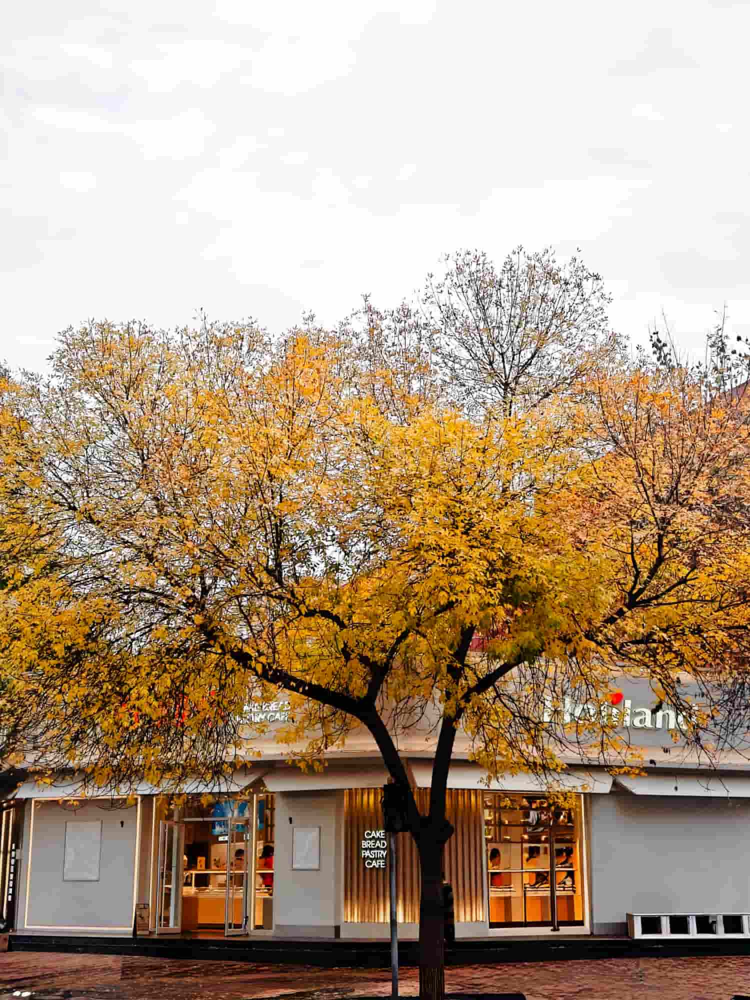
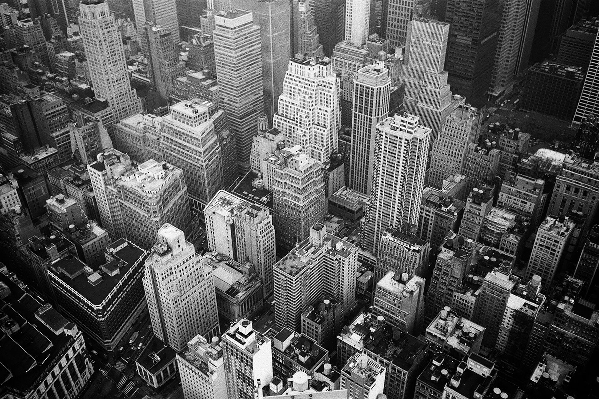
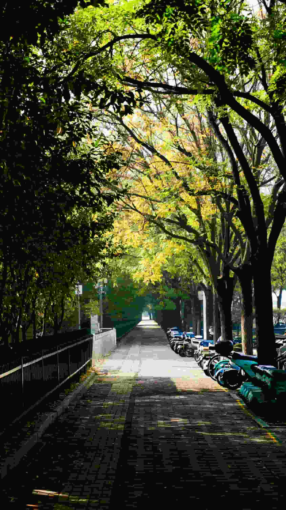
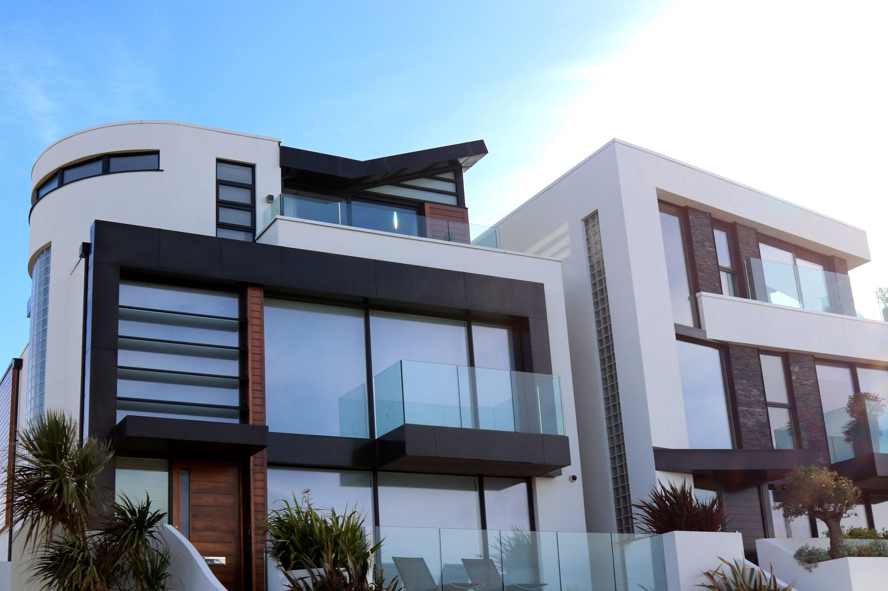
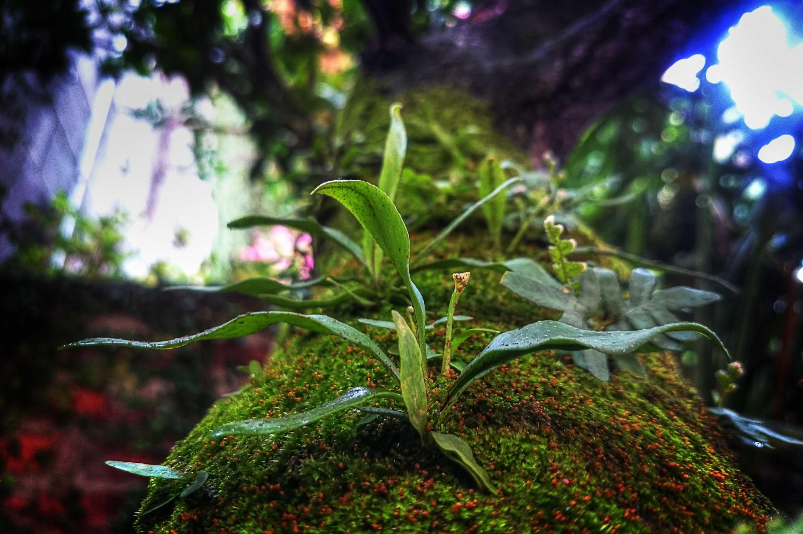
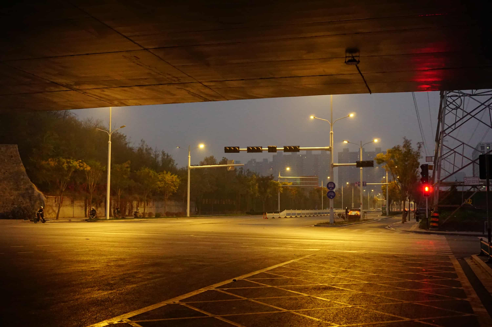

Independent photographer
Selected works 2023—2026
我会找到 I will find 逆转时间的 reverse time 公式 The formula
Scroll to explore01VISUAL INDEX
光迹索引
不是按时间排列，而是按照光线、情绪与城市留下的私人索引。

01Landscape / 2024
02City / 2026
04Portrait / 2026
05Space / 2025
06Night / 2023
07Night / 2024Archive2023—2026
Entries17 Photographs
IndexLight · City · People
StatusContinuously updated
02SELECTED WORKS
光经过的地方
拖拽浏览 / 点击查看作品
0117
03NOTES & STORIES
没有交给相机的
那些瞬间
关于城市、等待、旅行，以及按下快门前后发生的小事。
“ 摄影不是答案。
它是提醒我继续观察的问题。
04CONTACT / COLLABORATE
约拍、展览合作、内容共创，或者只是分享一张你喜欢的照片。
我又要出发了， 这次是去找我自己。
© 2026 Zhang Junyi